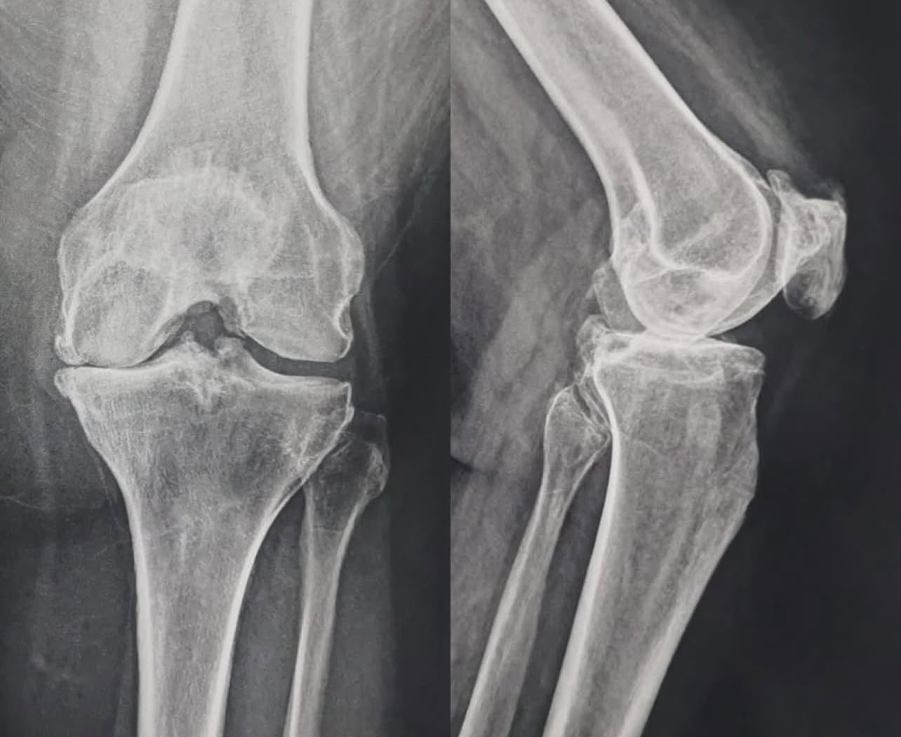

The knee has three compartments: inner (medial), outer (lateral) and kneecap (patellofemoral). In this case the wear was concentrated in the inner compartment, while the rest of the knee was still in good condition. That makes it suitable for a partial knee replacement, a smaller operation that keeps the healthy bone and ligaments.
- Condition
- Medial (inner) compartment osteoarthritis
- Treatment
- Unicompartmental (partial) knee replacement
- First steps
- Same day or next day
- Hospital stay
- Usually 1–3 days
- Walking aid
- About 1–3 weeks
- Final result
- 3–6 months

BEFORE SURGERYTap or click an image to view it full size.
What the “before” X-ray shows
The front view (left) and side view (right) show arthritis focused on one side of the knee:
- Collapsed inner joint space: on the inner side of the knee, the femur rests almost directly on the tibia because the cartilage has worn through.
- Preserved outer joint space: on the outer side (towards the thin fibula bone), a clear, healthy gap remains, showing that the cartilage there still works.
- Spurs and sclerosis: bony spurs at the joint edges and around the central spines of the tibia, with hardened bone beneath the worn surface.
- Side view: spurs at the front and back of the joint and around the kneecap, typical of long-standing wear.
Why a partial replacement
When arthritis is confined to one compartment, the ligaments are intact and the knee bends well, replacing only the damaged part has clear advantages:
- A smaller incision, less blood loss and less pain after surgery.
- The cruciate ligaments and healthy cartilage are kept, so the knee often feels more natural.
- Faster recovery, and often a greater range of bend than after a total replacement.
The procedure
Through a short incision, the worn inner surfaces are resurfaced: a curved metal component is fixed to the inner femoral condyle (held by small pegs), and a metal tray with a keel is fixed to the inner half of the tibia. A polyethylene bearing between them takes over the role of the lost cartilage.
What the “after” X-ray confirms
The post-operative images show:
- Front view: the femoral and tibial components sit only on the inner side. The outer compartment, with its natural joint space, is left completely untouched.
- Side view: the curved femoral component with its fixation pegs follows the natural curve of the bone, and the tibial tray sits flat on the shin bone.
- Restored joint space: the height of the worn compartment has been restored, which helps correct the inward bowing of the leg.
- Skin staples: the clips along the incision are removed at around 12–14 days.
Recovery and healing timeline
Every recovery is individual. These are the typical stages, and your own plan will be adjusted at each follow-up visit.
- Day 0–1
Walking the same day
Most patients stand and walk with a walker within hours of surgery or the next morning. Knee bending exercises begin immediately.
- Days 1–3
Discharge home
Once walking safely, managing a few stairs and comfortable on oral pain relief, patients usually go home within 1–3 days.
- Week 2
Wound review
Staples are removed and the knee is checked. Many people already walk around the house without an aid.
- Weeks 2–4
Building confidence
The walking aid is usually set aside within 1–3 weeks. Bend often reaches 110° or more. Driving is commonly possible at about 3–4 weeks, when the doctor agrees.
- Weeks 4–6
Normal daily routine
Return to most household activities, desk work, walking outdoors and stairs in a normal pattern.
- Weeks 6–12
Activity and strength
Swelling settles, and low-impact activities such as walking, cycling and swimming are encouraged.
- Months 3–6
Final result
Most patients report a natural-feeling knee by this stage. Regular strength exercise helps the implant last well.
Helping your recovery at home
- Do the prescribed exercises several times daily; early movement is key to a flexible knee.
- Ice and elevation help control swelling for the first few weeks.
- Keep your weight in a healthy range, which protects the rest of the knee.
- Prefer low-impact activities and avoid jumping sports.
When to contact the clinic urgently
- Fever, or increasing redness, warmth or discharge from the wound
- Calf pain or swelling, or sudden chest pain or breathlessness (seek emergency care)
- New numbness, tingling, or a cold or pale limb
- A sudden increase in pain, a new deformity, or being unable to move or bear weight as before
FOR YOUR CONSULTATION
Questions to ask
What does my X-ray show? Which treatment suits my bone and joint? When can I put weight on the limb, and when will I be back to my normal routine?
These X-rays are shared for patient education, and no personal details are shown. Healing times are typical ranges. Your own recovery depends on your injury, bone quality, age and general health, and is guided by Dr. Anuj Patwari at each follow-up.